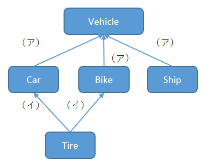

10.次の図は、言葉同士の意味関係を表すために考案された意味ネットワークを表している。
（ア）、（イ）に当てはまる選択肢をそれぞれ1つずつ選べ。

A. instance-of B. part-of C. is-a D. function |
答え Ｃ、Ｂ
【解説】
| Car(車)は乗り物なので、（Car is a Vehicle）、is-aという矢印で結ばれます。（ア＝Ｃ） また、Tire（タイヤ）はCar(車)の一部分なのでTireノードとCarノードはpart-ofという矢印で結ばれます。(イ＝Ｂ) |
 戻る
戻る 一覧へ
一覧へ